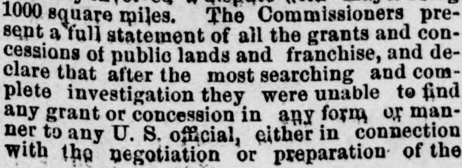
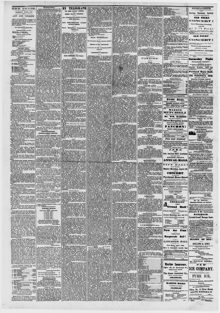

The Dominicans repeat tbeir willingness to be annexed on the terms of the treaty of 1869Los dominicanos repiten su disposición a ser anexados en la
The Portland Daily Press. Portland, Me., April 6, 1871. Page 3. Published by N.A. Foster & Co. A daily newspaper, 1862–1921.The Portland Daily Press. Portland, Me., 6 de abril de 1871. Página 3. Publicado por N.A. Foster & Co. Periódico diario, 1862–1921. View the originalVer el original


See the full pageVer la página completaThe newspaper reported that an investigation found no land grants or franchises given to any U.S. official regarding the treaty, and that the Dominicans reaffirmed their willingness to be annexed under the terms of the 1869 treaty, with additional requests regarding Samana Bay rent and educational funding. The Commissioners concluded that Dominican independence has never been a reality and that union as a State is the republic's only chance to secure its freedom and independence, though they made no formal recommendation on whether to adopt that course.El diario consignó que las averiguaciones practicadas revelaron que no se concedieron mercedes de tierras ni privilegios a funcionario alguno de los Estados Unidos en conexión con el tratado, y que los dominicanos ratificaron su avenimiento a la anexión conforme a las cláusulas del pacto de 1869, formulando peticiones complementarias relativas al pago del arrendamiento de la bahía de Samaná y a fondos para instrucción pública. Los comisionados concluyeron que la independencia dominicana nunca había sido una realidad y que la incorporación como Estado de la Unión constituía la única vía para afianzar sus libertades e independencia, aun cuando se abstuvieron de formular una recomendación explícita sobre dicho camino.
FULL TEXT:TEXTO COMPLETO:
The Portland Daily Press April 6, 18716 de abril de 1871
FINANCIAL.FINANCIERO.
The Commissioners made a thorough and careful examination of the debt of San Domingo, and find the sum total of all debts and outstanding claims against the Republic to be $1,565,831. The receipts of the government for 1870 were $772,684, of which $728,605 was from customs and $35,466 from taxes. The Commissioners lay great stress on their efforts to get the exact state of the debt of the Dominican Republic, and believe their conclusions substantially correct. San Domingo is not believed to be liable for any of the indemnity exacted by France from Hayti, and the Commission is assured that no obligation or negotiations have been entered into with any country except the United States.Los Comisionados hicieron un examen minucioso y cuidadoso de la deuda de Santo Domingo, y encuentran que la suma total de todas las deudas y reclamaciones pendientes contra la República es de $1,565,831. Los ingresos del gobierno para 1870 fueron $772,684, de los cuales $728,605 provinieron de aduanas y $35,466 de impuestos. Los Comisionados ponen gran énfasis en sus esfuerzos por obtener el estado exacto de la deuda de la República Dominicana, y creen que sus conclusiones son sustancialmente correctas. No se cree que Santo Domingo sea responsable de ninguna parte de la indemnización exigida por Francia a Haití, y la Comisión tiene la seguridad de que no se ha contraído obligación ni negociación alguna con ningún país excepto los Estados Unidos.
The extent of undisputed Dominican territory is 22,512 square miles. The portion which formerly involved a dispute with Hayti being 1000 square miles. The Commissioners present a full statement of all the grants and concessions of public lands and franchise, and declare that after the most searching and complete investigation they were unable to find any grant or concession in any form or manner to any U. S. official, either in connection with the negotiation or preparation of the treaty.La extensión del territorio dominicano indiscutido es de 22,512 millas cuadradas. La porción que anteriormente implicó una disputa con Haití es de 1000 millas cuadradas. Los Comisionados presentan una exposición completa de todas las concesiones y franquicias de tierras públicas, y declaran que después de la investigación más exhaustiva y completa no pudieron encontrar concesión ni franquicia alguna en forma o manera alguna a ningún funcionario de los EE. UU., ya sea en conexión con la negociación o la preparación del tratado.